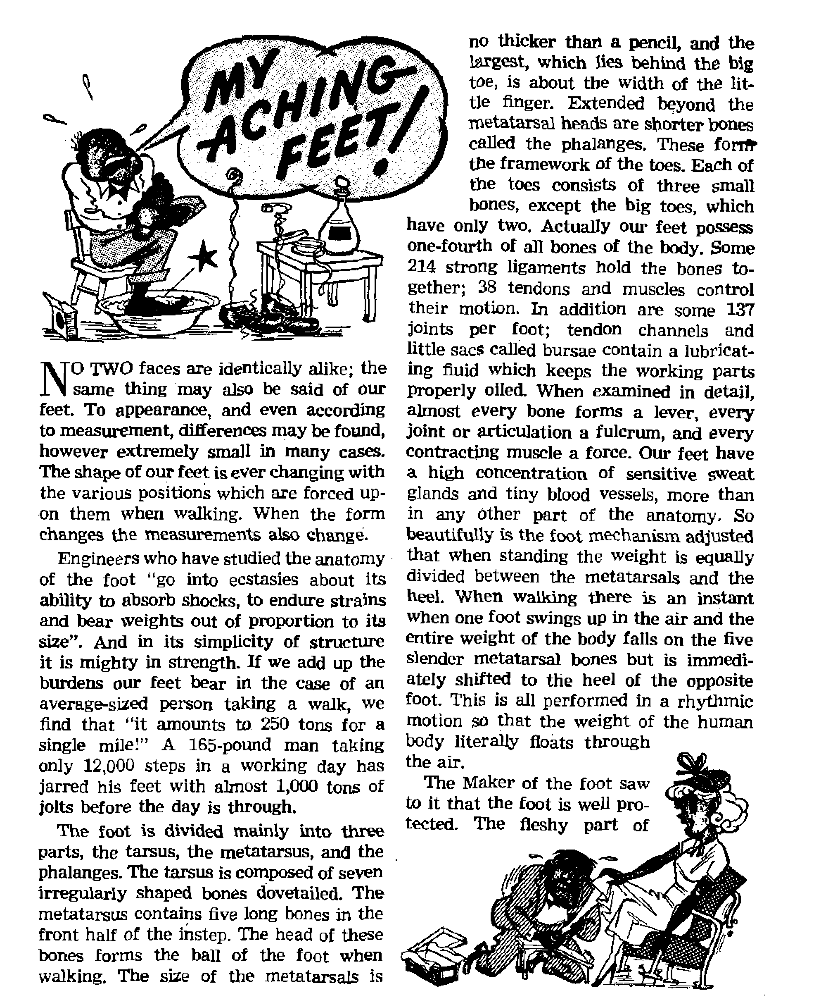
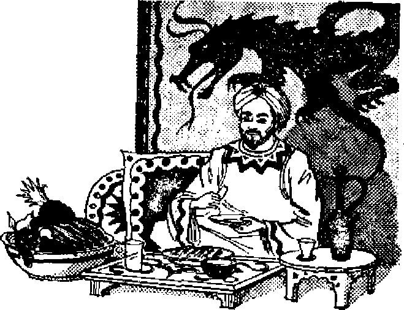

OBJECTIONS TO BLOOD TRANSFUSIONS
Unrest Marks the Ballot in Italy
The Army Chanlain’s Role
Popular Misconceptions Regarding Prayer
THE MISSION OF THIS JOURNAL
News sources that are able to keep you awake to the vital Issues of our times must be unfettered by censorship and selfish interests. “Awake I" has no fetters. It recognizes facts, faces facts, Is free to publish facts. It is not bound by political ambitions or obligations; it is unhampered by advertisers whose toes must not be trodden on; it is unprejudiced by traditional creeds, This Journal keeps Itself free that it may speak freely to you. But it does not abuse its freedom. It maintains Integrity to truth.
«Awake 1° uses the regular news channels, but !* not dependent on them. Its own correspondents are on all continents, in scores of nations. From the four corners of the earth their uncensored, on-the-scenes reports come to you through these columns. This journal’s viewpoint is not narrow, but is international. It is read In many nations, in many languages, by persons of all ages. Through its pages many fields of knowledge pass in review—government, commerce, religion, history, geography, science, social conditions, natural wonders—why, its cover* age is as broad as the earth and as high as the heavens.
“Awake 1” pledges itself to righteous principles, to exposing hidden foes and subtle dangers, to championing freedom for all, to comforting mourners and strengthening those dis Heartened by the failures of a delinquent world, reflecting sure hope for the establishment of a righteous New World,
Get acquainted with “AwakeI” Keep awake by reading “Awake!"
Published Semimonthly By WATCHTOWER BIBLE AND TRACT SOCIETY, INC,
117 Adajns Street
N, H. Knorr, Pr«$&It ;6ei»i
Print!no thte 1s«ue: »75&It ;000
Listed in which the monthly h Mil kind: Semi-monthly—Atika*iisp English, Finnish, French, German, Spanish, Norwegian, Italian,
Monthly—Dutch, Greek, Portuguese, Ukrainian.
Qdfcw Ytirijr eqtiMrfptfna Kite
AintrlM, U4., 117 Adams BU Brooklyn 1, NX |1 AitVtilfe H Bermuda Bd., StmtWld. N S.W- Ss tanili,At Irwin Ate., Toronto 5, Ontario JI Enflund. 34 Cri«n lWr&It ;c«, ixnittor, IF. 3 7s South Africa, Prltote Ba&It ;, P.O. Eluudtfouteln,
Trinsrttl 7c
Brooklyn lt N, Y., TJ. 8, A, Obant Scitbe, Secretary
Ffve cent* g copy
Should fa* want to ottft in w country in compliance with relations to overseas rates delivery of Witness. remittances art accepted al Hroofcijm front ewwttrlc# where nn orfira la located, Sjr tatanctfondl money order mail. $t/hscriRtl&It ;w rates In different conn tries ate here at* ted 5n local current?. Netle* erf oiplfatten (with renewal b]*nk) V tent at l*a*t two Issttea before subscription nt plres. Chant* d tuMtoit when tent to our office ma? be expected effectlTe within wtc taAtiiS. Stud four old m well at addtow.
Entered jc second-flaa matter at Brooklyn, N, Y
Act of March 3. ia?G Printed In u, S. A
|
The Army Chaplain’s Role |
3 |
Objection^ to Blood Transfusions |
16 |
|
Unrest Marks the Ballot in Italy |
5 |
Blood Transfusion Risks |
17 |
|
A Priest Changes Sides |
6 |
Scriptural Objections |
19 |
|
Beds Charge Vote Fraud |
6 |
Jehovah’s Witnesses Preach in | |
|
Blood Extenders—PVP, Dextran |
All the Earth—Panama |
21 | |
|
and Okra |
8 |
Indonesia Today |
23 |
|
My Aching Feet! |
9 |
‘’Your Word Is Truth1’ | |
|
Take Care of Your Feet |
11 |
Popular Misconceptions Regarding | |
|
Hurricane Madness! |
12 |
Prayer |
24 |
|
The Banana—Fruit of Antiquity |
13 |
A Prime Minister for the Gold Coast |
26 |
|
The Home of Banana |
14 |
Watching the World |
29 |
& “Now it is high time to awake.'—Romans 13:11 &
Volume XXX H Brooklyn, N. Y., September 02, 1952 Number
IN HIS public declaration before Pontius
Pilate Christ Jesus stated, “My kingdom is no part of this world/* And in his prayer to his heavenly Father on the night of his betrayal he said regarding his followers, ‘‘They are no part of the world just as I am no part of the world.” (John 18:36; 17:16, New World Trans.) In striking contrast with these words of Christ the clergymen of Christendom, though claiming to be his followers, are very much a part of this world, as much a part of it as are big business and big politics. At no time is the unity between business, politics and religion more apparent than when a nation is at war. Political and military strategists direct the conflict, business finances it and religion provides the allnecessary morale, pulpiteers fixing the public mind upon the righteousness of the cause and chaplains doing the same for the soldiers in the army.
But one exception regarding the latter is the little land of Denmark, It is the only European country outside the Iron Curtain that does not provide regular chaplains for its soldiers. Chaplains may volunteer, but that is entirely up to them. The clergy are very much concerned about this state of affairs and it is interesting to note what they have to say regarding the need of chaplhins to serve the men in the Danish army. Quoting from “Bev” Sandbaek's Chaplains in War and Peace:
“One of the greatest generals of the last war, Field Marshal Montgomery, made the following statement before the famous battle of El Alamein: T would as soon think of going into battle without my artillery as without my chaplains.* . , .
“After pointing out that the true task of the chaplain is to inspire the army, Hughes [England's chief-chaplain J establishes the fact that it is of the greatest importance for the soldier to feel that his fight is a fight for truth and righteousness. Moreover he says: "There are three main roots around which the religion of the army will grow and shape itself. The first is faith in God's indisputable rulership . . . The second is the belief that God is interested in the fight that the men are fighting. The third is to get the men to believe in God, not as an indefinite, meaningless Being, but as One who demands of them the things Christ advocated.
“ ‘The chaplain must find the way to the heart of the army by explaining the significance of godliness for the soldier. . . . The chaplain, when the coming battle begins to occupy the thoughts of the soldiers, must throw light on the subject of the fight between good and evil. He must speak to the soldiers about the righteousness of their cause, about the presence of Christ, the value of prayer, the honor of sacrifice, the gift of eternal life, all of which will deepen their earnestness and build up the
faith that they are soldiers unitedly fighting for thihgs pleasing to God....
“ 'When the battle is being fought the chaplain should attend to the ones falling; should strengthen those who have lost courage. After the battle the reaction sets in. It affects the men wherever they may happen to be, among the wounded or in the military units. The chaplain must immediately restore the mental balance of the men.’ ”
In an interview with Kristeligt Dag-blad, August 16, 1949, a young English chaplain, E. G. Oliver, told that the soldiers had to attend classes for religious instruction by the chaplain once a week: “These lessons are a part of the training of the soldiers. Just as the army is training the soldiers in various physical ways it also sees to it that they receive elementary training in spiritual things. These lessons are of great value. ... I tell the soldiers how God’s ways are inscrutable and that he has a work to do which they must perform during the war and now after the war in Germany. God wants them to be there and he has a plan in connection with it. It is simply God’s plan that they should be soldiers.’’
Asked if the chaplains mean quite a lot to the soldiers, this young chaplain replied: “Montgomery has put it this way, that he would rather do without his artillery than without his chaplains. I was in the Eighth army in North Africa before and during the campaign in the desert, and we saw many a proof of how important Montgomery, himself a sincere Christian, considered the work of the chaplains. . . . Before every big battle a divine service was held and after each battle we all assembled in commemoration of the dead and to give thanks.”
Quoting another Danish clergyman, “Rev.” Thorkild Claussen, who acted as a chaplain in England, the Kristeligt Dag-blad, January 7, 194S, said: “Montgomery in November 1944 in an order to the army said: ‘I do not believe a commander can inspire big armies or units or single persons to achieve great things unless he has a firm religious conviction himself. All commanders should realize that a well-organized and healthy institution of chaplains is an invaluable aid to victory.’ ”
Protestant chaplains in endeavoring to convince their soldiers of the righteousness of their cause and of the deeds that they are called upon to perform may call to mind what Martin Luther once said:
“The hand that wields the sword (of the authorities) is no longer a human hand but God’s hand, and it is not man but God who hangs, tortures, beheads, kills and wars. ... A soldier must have the conviction and comfort of knowing that he is obliged to do what he is doing, being assured of serving God and able to say: ‘It is not I who strikes or stabs or kills but God and my prince of whom my hand and my body are servants.’ ”—If the Military Can Abide in a State of Salvation, ppi 626, 65B, 661.
According to the “Rev.” Sandbaek, “The need of chaplains when an army goes to war is self-evident. It has been done all the way back to the time of paganism. Some of the oldest ‘chaplains’ known presumably were the priests of Amon-Ra who accompanied the Egyptian armies in the sixteenth century before Christ. The institution thus is seen to be mellow with age."
Not all the clergymen in Denmark are of the same opinion as Sandbaek as regards the need of chaplains in the Danish army. The argument is a fertile one. However, ministers of Jehovah God, his Christian witnesses, in Denmark as everywhere on earth, find their time occupied without involving themselves in such controversies. They maintain neutrality from them while preaching God’s kingdom .-Matthew 24:14.
fry “Awake!1* correspondent In Italy
ATHOLICS, communists, fascists and royali&ts rushed to the polls during Italy’s local elections of May 25, 26,1952. Political unrest was in the air in a land where unrest is no longer unusual. Since the April, 1948, national elections the power and influence of the clerically backed Christian Democratic party had been steadily on the wane. Not the least of the government’s trouble lay in the miserable Italian peasants’ cry for land. As a climax to a long-standing grievance the peasants had resorted to violence and thus forced some land away from Italy’s feudal barons by way of government decree. (See Awake! August 22,1952.) But this only turned the peasants’ gratitude to communism, which had inspired the violence; whereas many land barons, in anger, had turned to monarchist or neo-fascist parties of the extreme right. The 1952 elections came upon the government at a most unfavorable time; but, what was more important, Christian Democrats were somberly pondering the consequences of defeat now upon the national elections of 1953. Realizing the real fight for next year was starting now, they waged a bitter battle, striking hard with their usual big gun, the Catholic Church. The Roman Civic Committee’s official bid to the Catholic electorate of Rome declared:
“Every citizen, man or woman, able to vote is seriously held to vote under the penalty of mortal sin. Anyone who gives his vote to lists that contain candidates of
Communists and associate parties commits mortal sin, and furthermore, by order of a decree of the I Holy Office, remains excluded from the Holy Sacraments, The faithful are strictly held to give their vote only to lists and to candidates that guarantee to respect religion, Catholic morals, both in public life as well as in private, and the education of the youth.” The government also dug out its favorite slogan, that it had saved the land from communism, assumed the role of savior and thereby hoped to minimize its mistakes and shortcomings. Still, the Catholic Church was astute enough to realize its party could no longer win alone. So the Christian Democrats formed an apparenta-mento with other smaller center parties, thus pooling their strength. The communists formed a similar coalition with the socialists of Pietro Nenni. At this it seemed that the lines of major political rivalry, as they have been known in Italy since the war, were drawn. But a prime surprise was in store, a surprise ushered in to the militant beat of drums and martial music.
‘The “surprise” was Italian fascism— “neo-fascism” they call this version—the fascism of 11 Duce in only a slightly new dress. 'While the familiar bucket-jawed profile is missing, many of the current leaders are the very men who stood behind their former chief and listened to him stir up the popular spirit of Italian patriotism. The spring election provided a suitable springboard. General Graziani, once convicted as a war criminal, was back. The
familiar crowds gathered in Rome’s public squares were back too, now cheering the cries that Italy would never be slave to either America or Russia. Thousands of young men educated in fascist schools supported the movement. Fascist songs of war were sung boldly on the streets of Rome during these political rallies. Inadvertently, through their joint failure to satisfy the people, both the Christian Democrats and communists contributed to the unexpected boom for fascism.
A Priest Changes Sides
Amid growing tense hostilities events took a sensational turn, On April 25, exactly one month before the elections, 17 Paese, a Rome newspaper with communistic tendencies, reported an interview with “Padre” Alighiero Tondi, "one of the most noted and influential members of the Society of Jesus (Jesuits) and of the Roman ecclesiastical world, a professor of the Gregorian Pontifical University.” Here this well-known priest and Jesuit announced that he had. quit the priesthood and Catholic doctrine and would adhere henceforth to communism’s ideology and politics. “Padre” Tondi explained that he had abandoned the Catholic Church because in all his years of study among the Jesuits he had never received any scientific proof of so-called “Catholic truth".
“The Church," said Tondi, “represents the historical arrangement of man’s ne’ed to believe, as long as scientific impossibility to dominate natural and social events lasts. But this era must end. That is why communism has appeared to me finally as the only truth, proven in the light of the most rigorous science." He went on, “The history of the Church is a fabric where, side by side with admirable sacrifices, but rare, separate from the prevailing theory, endless misery stands out. Bloody batties, religious wars, common wars, protestants, Waldenses massacred, popes who sent for foreign armies, prison, force, anything to maintain their power. Documented facts. A political technique that disclaims the kingdom of this world with words, but vice versa acknowledges it with facts, at any cost.”
This renegade priest defined Catholic politics thus: “An internal tyrannical politics, unjust, above all unhelpful and selfish. The popular masses, disinherited, caressed with words: capitaiism, with facts. Enormous scandals. Powerful frauds. In Rome, the capital of Catholicism, an immense multitude of people reduced to living conditions of animals. Social reforms conceived in bad faith, promises unfulfilled or fulfilled cunningly at the service of the powerful. Sand in the eyes. Government positions given to unprepared persons, to a clique of traffickers in public wealth. . . . Result: scandal and discontentment everywhere." This denunciation of Catholicism by a former prelate provided a political bombshell of no small proportion. Though the clerical party tried to mitigate Tondi’s resignation by branding him a hypocrite, the communists and allies gave the matter wide publicity, using it to spur their campaign.
Tension and animosity built up right to the time of balloting, from Sunday morning, May 25, to 2 p.m. the following day. The three major blocs appeared on virtually every ballot in the country, while the total number of individual parties thus embraced, of course, ran far higher. In Rome alone there were sixteen different parties represented.
Reds Charge Vote Fraud
Outstanding was the number of priests, nuns and members of religious orders present at the polls. Invalids and bedridden persons were taken out of hospitals and even mental institutions so that they could go to the polls and vote the way the nuns and nurses of the Catholic Church had instructed them. One instance reported a sick person who died while voting. Taking a back seat for a time was the familiar resort to prayers and miracles. These religionists apparently regarded their right of suffrage a more potent means of defeating their political opponents.
In their zeal for victory, the communist press charged Catholic nuns with voting through the names of deceased persons and by means of electoral certificates not belonging to them. In Italy there is no truly independent newspaper, al] are influenced by one or another political faction. Hence, the above information appeared only in communist papers or those leaning markedly that way. There was, of course, no mention whatever of these charges in the Catholic-controlled press. The neutral observer is left with these two extremes in news sources when making his conclusions. A circumstantial bit of evidence decidedly against the church, however, is the obvious political activities carried on by priests prior to the elections. Their almost frantic desperation adds damaging weight to the charges of fraud.
Final results of the vote indicated victory for the Christian Democrats by the proverbial skin of their teeth. Without the alliance of other center parties they would certainly have gone down. Tabulations in Rome gave 384,020 to the center bloc, 314,243 to the left-wing bloc, and an astounding 206,819 to the extreme right, the monarchists and fascists. Out of twenty-four capitals where blocs were formed, thirteen remained in the hands of the center, six, including Naples, went to the monarchists and fascists, and in five the communists won out.
So much alarm was caused by the showing of the neo-fascists and their allies that immediately after the elections their legality was contested in Parliament. For once the Christian Democrats and communists agreed and they teamed together to approve a bill declaring their common foe illegal. However, in view of the large and apparently growing support for the movement attested in its vote, it remains to be seen as to how effectively the law will be enforced. Their attitude indicates that neither the Christian Democrats nor the communists realize the blame which through their own failures they must share for fascism’s rebirth in Italy. Italy is a current outstanding example of the multiplied failures of monarchies, democracies and police states to establish lasting order, harmony and contentment. Italians are painfully aware of this, which they show by resorting in turn to first one and then another alleged human remedy.
But men of faith and good will toward God here need not continue in frustration. Real Christians do not seek favors from politicians, nor do they mix religious teachings with political speeches. Nor are they upset by world upheaval. By study of their Bibles they know we are at the end of the Devil’s corrupt system of things. (2 Corinthians 4; 4) All efforts to save or prolong it must in the end prove vain. Jehovah’s witnesses are engaged in preaching God’s theocratic government worldwide. And this righteous kingdom requires no elections or political parties to keep it in power. Italians now have opportunity to demonstrate their faith in this government and reliance upon it. For this they need not the ballot, but -the Bible. The formula does not include hatred, coercion or violence. They need only hear the Bible, believe it, and preach it.
present era may be'property termed not only the ‘‘’machine age" but also the ^synthetic age". We have synthetic rubber, .synthetic fibers, synthetic food flavors, etc. An d now we are also getting synthetic plasmas. Foremost among these are PVP, dextran and ttn okra derivative.. Under the heading "New Mastic Primes Human Heart.1?" the Popular JJetesc® monthly, for July 1951, had the following to say regarding polyvinyl pyrrolidone, made from acetylene and known as PVP:
U “In Philadelphia. General Hospital I. watched the golden fluid [PVP] trickle from a transfusion bottle into the arm of a patient who Jay deathly still. A. 50-year-old woman, . weakened by Internal bleeding, had been brought to a state of total collapse with no discernible pulse or blood pressure. As the fluid surged through her veins she stirred and opened her eyes. After 15 minutes and about two quarts of fluid, her blood pressure was close to normal, and she sat up and talked, cheerfully with the doctors.”
‘i? In Germany, where PVP was developed, this synthetic plastic, plasma was given to more than .800,000 persons during the last war and is credited with saving the lives of thousands of soldiers, It has been successfully administered to nearly a millton persons in. Europe and has been so successful that it continues to be standard treatment for emergency cases not ‘ only In Germany, but also tn France, Italy, Belgium and other countries. The PVP solation is now being used throughout the Philadelphia General Hospital at one-seventh of the cost of plasma. All together some 50 hospitals are employing It, and in several hundred cases not one unfavorable result has been noted.
U’ Further testimony along the same line was given by the New York Sunday Mirror, March 25, 1951, which told that “Science’s Synthetic Plasma” can. sustain the life of a patient, who has only 15 per cent hemoglobin, whereas 30 per cent is the minimum required, to keep alive patients receiving regular plasma transfusions. Of 75 infanta treated for extreme gastrointestinal disturbances, .40 were quickly cured where human plasma had had no effect And according to the manufacturers
9 ' i'A * > '• • <■ < C ... T H ■
PVP, this product apparently to have other valuable properties ,, , . gives promise of detoxifying dangerous drags .. . and to increase 'the efficiency of drags including antibiotics, anaesthetics and others”.
"W Speaking at the 170th meeting of the Massachusetts Medical Society, a Dr. Everett L Evans said that dextran, is cheaper to purchase and just as effective as plasma fa the emergency treatment for burns. Where j.2 to 20 pints of blood plasma are needed at times to heal a patient, only three or four pints of dextran have the same effect. *We tried it tm 59- severely burned patients and found it just as good as plasma.’—-Boston Post, May 25, 1951.
1 Xs “Common Vegetable Substitute for Blood." t Thu® the Milwaukee Sentinel, January 28, / 1951, headlined an artiefe which, told of a 1 product made from okra having all the advantages of blood plasma without any of its f disadvantages. It Is free from the hepatitis i virus which can cause serious aftereffects to . those taking human plasma. It can be stored, r in powder form in Just a fraction of the space i a similar amount of plasma would require » and it will keep indefinitely at any tempera-r tore without losing- any of its life-giving qualities. This is In striking contrast with human • plasma which must be kept under constant f refrigeration, and even then, becomes useless when it has been kept too long. Further, • plasma, from okra can. be made for a fraction of the cost of obtaining human plasma, even when this is obtained from nonprofit
• organizations.
; T “According to the experts responsible for the new discovery, someone with no medical \ training could learn within three days how to ( give transfusions. Victims suffering from a / loss of blood could be given a' transfusion 1 right at the scene of aeeldent by a policeman ( or rescue squad, thus eliminating the often / fatal delay caused by a trip to the hospital l for blood or plasma transfusions," the article f declared.
/ T Nor w'uld we overlook the time-honored
saline solution, which according to a Massachusetts surgeon has never failed him once in more than 20,000 operations.
the big toe is a natural protection to the bone, 9o that by the wedging and flattening process the bones of the toe are not deprived of this natural protection. The same applies to the other toes. The soles of our feet were protected even before we were born, by bestowing upon them a thicker skin, and a cuticle or outer skin, stronger than that of the rest of the body. This outer skin becomes sensibly thicker in those who go barefoot; and, by a curious provision, instead of wearing away, as in the case in inanimate substances, if they are exposed to friction the soles become thicker and harder.
Man was left to look after and care for his transportation system—his feet. However, many prefer to pay more attention to the tires on their automobiles than they do to their feet. They squeeze their feet into tight-fitting shoes, wobble on stiltlike heels, pound their soles on concrete sidewalks, tramp over rough surfaces, trudge up and down stairs with heavy loads, and run, jump, and dance until their feet scream for mercy! They stub their toes on furniture, stumble on curbstones, allow them to get icy cold or fiery hot, neglect them when they are wet and abuse them when they are dry until they cannot stand on them any longer. Exhausted, they sink down into an easy chair, ease off the shoes, and gently squeeze the toes and feet in the palm of the hands and moan, “Oh, my feet are killing me!” But are they? The painful truth is that we are killing our feet.
Lack of Proper Care
Only with neglect come pedal ills, the commonest of which are: callouses, coms, ingrown toenails, bunions, weak arches, athlete’s foot, arthritis and hammer toes. The American Medical Association once counted forty-six additional ailments which keep America footsore. “These insidious foot-derived ills have been known to twist personalities, transforming normally happy people into trigger-tempered malcontents." Almost any foot trouble can incite secondary ailments.
Among the ills associated with unhealthy feet are: “Besides headaches, low back pains which may keep a patient bedridden for days, constipation, loss of appetite, sluggishness, over-ail fatigue, insomnia, blurred vision, premature wrinkles on the forehead, and abdominal discomfort caused by poor posture which may compress the deep blood vessels.” (Redbook magazine, September 1949) Of course, not always is pain or swelling in the feet due to mechanical derangement Such conditions can be caused by arthritis or by diseases.
However, most foot disorders originate in faulty footwear or at least footwear unsuited to the individual In American industry it was found that “one of every four men and two of every three women are wearing shoes that are too tight". Dr. Walsh remarked that women hold a two-to-one lead over men in wearing the worst possible shoe for their work. “Far too many women—housewives and others— teeter on five-inch heels six to eight hours at a time. I know no better device for slow mutilation of the foot,” said a well-known New York podiatrist
High heels raise havoc with the human body. “By raising one pier, i.e., the heelbone,” says Mr. Holden, “we are always walking upon an inclined plane; we alter the natural bearings of all the other bones; we throw more pressure than Nature intended on the toes; hence distorted feet, crooked toes, bunions, coms, et id genus omne!” By destroying the natural play of the internal mechanism of the foot we strike a damaging blow to the general health of the entire body. “It's a pity," said Norman Lake, one of Britain’s foremost orthopedic surgeons, “that the public cannot be induced to believe that a shoe
with a lower heel or the Cuban type, with a height of one and a half, or at most two inches, can be made to look quite smart and neat. The foot is a long-suffering structure which stands up remarkably well to abuse, arid requires prolonged and forcible measures to change its configuration. Yet over the years, high heels do produce distortion, so that the wearer often reaches middle age before being compelled to seek relief.”
Appearance and style govern the selection of a shoe today, and not comfort and good sense. What often happens is that a customer sees a shoe in the store window, likes its style and insists on buying it even though it is not suited for his feet. “And that,” said Dr. Benjamin Kauth, podiatrist and director of the American Foot Care Institute, “is of the chief reasons why many people wear ill-fitting shoes. ... Of course, the fact that almost everyone has one foot slightly larger than the other makes for some trouble. But if you get a size to fit your larger foot, you probably can avoid the difficulty because the other isn’t likely to suffer.”
Take Care of Tour Feet
The acquisition of an intelligently-chosen pair of shoes is not by itself a positive assurance of healthy feet. While we cannot grow crooked toes EtrEAght, we ean 'dwow aside the wedge-toed, high-heeled, unyielding shoe that is directly responsible for the distorted muscles, tendons, ligaments and bones of the foot, plus the corns, bunions and ingrown toenails.
Coms are usually caused by ill-fitting or badly shaped shoes. The way to get rid of a com or corns is to get rid of the shoe that is causing the friction, and the com will most likely disappear of itself, Hie carving off of dead skin with a razor or applying corrosive acids is risky business; but even if accomplished without infections or bums, relief may be only temporary at most.
Bunions are the result of shoes that are too short or shoes that have a tendency to pile all the toes to a point and press the bones out of shape. The latest and most successful remedy for bunions and hammer toes is, according to Selwyn James, “the traction technique, a course of mechanical wkitki ■sVx'eVtYi Yrje a’ununnifljy bent toe gradually and painlessly back to its normal anatomical position.” However, says he, “some bunions are sq far advanced that the palliative treatment, which emphasizes relief of pain rather than correction of the defect, is the only hope . . . Surgery for bunions, once common and often fruitless, now is seldom prescribed.” Macfadden’s Encyclopedia of Physical Culture suggests that “using a soft shoe such as kid, or modifying its shape with a bunion stretcher so that it fits the bunion, in conjunction with the other measures suggested, will reduce the pain and disability to the minimum. Wrapping a cold, wet cloth about the foot for the night, and covering this with a larger dry towel held snugly in place with safety pins, will reduce inflammation”.
Our feet work harder than the jaws, hands or any other muscle-and-bone-: held part of our body. They need rest. Give them a recuperate. ^Batne Ynem
in warm water mixed with a haridful of bicarbonate of soda and Epsom salts. If they perspire, dust them with boric acid powder. House them in comfortable shoes—shoes in which you can wiggle your toes. If you would be kind to your feet, wear high heels only to occasional dress affairs. Run barefooted up and down the ocean beach or walk around the lawn when the dew is still on the grass. This will cause the relaxed muscles to become alive again. Cherish your transportation system and it will serve you well as long as you live.
By “Awoke!" correspondent In Fiji
THERE was much activity in the capital city, Suva. Hundreds filled the main thoroughfares to cheer anti bid 800 specially trained jungle-fighting Fijian soldiers farewell as they departed for Singapore to aid the British in ridding Malaya of the Communist bandits aftd terrorists. None of the cheering and weeping crowds thought of a coming disaster that would befall Suva in less than three weeks, None would have believed, if it were told them, that the very wharf that they were standing on would be wrecked and many of their homes would be no more.
g The Fiji islands lie within the tropical climate and are therefore subject to hurricanes. On the morning of January 28,1952, the weather was very bad. But the city of Suva was a scene of people traveling to work either by bus, car, cycle, or, as most do, by foot. All had suspicion of an approaching hurricane, but the majority, as usual, felt sure that it would bypass Suva. It did not! When it struck, it struck with all its fury. Many dashed from their places of work and business to their homes. Some wore alpnost blown into the air, while others had to give up with sheer exhaustion trying to fight against the wind blowing at over one hundred miles per hour! Some were further ensnared to go home when the lull of twelve minutes came during the 41 eye” of the hurricane. Then the wind changed its course. The velocity of this hurricane went well past one hundred and fifty miles per
Ssxg.sstepro-
were told them, that the very wharf that they were standing on would be wrecked and
Tl’niJrl Kf, Tift mAFQ
ried away! Buildings rocked. Sheets of corrugated iron were blown about the streets of Suva as if they were pieces of paper. Huge trees were uprooted and tossed over like matches. Roofs were removed from houses and business premises as one's hat is tossed into the air. Ships were tossed about. Wharves were smashed. After two hours of madness all was quiet.
People came out of their hiding places fearful at heart, dreading what they might see. The whole countryside was converted virtually into a wilderness; Instead of appearing as we are In the height of the summer season, now it appeared like wintertime. All the tall trees were either blown down or stripped bare. Much of the lush foliage In many areas was no more. Dead cattle, trees, and masses of debris brought down by the rivers into the sea revealed much damage outside the Suva area. Reports came through of the extensive hurricane damage in the northeastern and eastern parts of the island.
In one sugar-cane-growing district, seventy-five per cent of the houses of Indian tenant farmers were destroyed; much growing cane was damaged and the sugar mill was battered. The Fijian losses to the storm throughout the island were very great. In one province enormous damage both to village and food crops was done. Over 850 houses were destroyed! Food crops were destroyed, In native vegetables there was a loss of 880,000 dalo, 47,500 yams and 200,000 tapioca plants, also 465,000 banana trees were destroyed! In aft-other province devastation was caused, not so much by wind as by flood waters and landslides. A dam broke and demolished three villages.
The Yasawa islands form a sixty-mile chain of tropical islands said to be among the most picturesque In the South Seas. This is where the hurricane struck first. Its beauty was temporarily marred. In the two northern islands of the group, ten villages were demolished and 1,700 Fijians found themselves homeless In two hours!
Other parts of the earth may bewail their five per cent of the houses of Indian tenant farmers were destroyed; much growing cane was damaged and the sugar mill was bat-tragic as such elemental upheavals are, they but illustrate in a fragmentary way the potential forces at the disposal of the great Jehovah God, Creator of the elements. How will this world’s structure fare in the face of his unleashed fury at Armageddon? How suddenly and devastatingly will that unparalleled storm change the appearance of this planet? Where then will survivors find the only refuge? Only in Jehovah God, who even now invites would-be. survivors to learn of him through his Word before it is too late.
THE BAHAMA ■
FRUIT OF ANTIQUITY
IT IS a sweet, delicious fruit. Both livestock and humans love it. When fed to livestock, it is fed green, because in this stage it contains approximately the equal nutritive value of grass and grain. When fed to humans, it is left to ripen, or certain species are cooked and then served. Chinese herb doctors have brewed medicine from its roots. It has long been used by Indians for its soothing effect on bruises, swellings, sores and open wounds. Its green skins are a valuable source of chlorophyll. The merchants of the Far East wove mats from its stalk fibers, and its pulp can be used to make paper. Mothers and markets have used its leaves to wrap hot foods. Its leaves also provide perfect shelter from the hot sun during siesta. Its fruit now contributes to the economy of about a third of all American republics. It has been “the sole incentive to the construction of bustling towns and ports out of jungle and swamp, thousands of miles of railways, the first regular shipping service between Central and North America, the first hemispheric radio network. It also touched off revolutions, almost started a war, and entangled the U. S. in murky imperialistic intrigues”. Legend dates its beginning in the garden of Eden. It is called the “fruit of wise men”. In India it is called Kadali; in China, Pachiao; in Spain, platano; and in America it is called banana. The botanical name for it is Musa sapientum, which means “fruit of wise men”, and alludes to Theophrastus’ statement that the wise men of India used a certain fruit for food, which seems to have been the banana.
To authenticate this conclusion, Fillipo Pigafetta, who published in 1591 A Report on the Kingdom of Congo and of the Surrounding Countries^ from the writings of Duarta Lopez, said: “A great quantity of fruit is found here, named 'banana’ by the natives, which I believe to be the same as Musa of Alexandria which it resembles both in form and flavor.” Sir Harry Johnston, in his “Comparative Study of the Bantu and Semi-Bantu Languages”, gave many distinct names for our fruit, including bana and banting and said that the latter name—banane—is the origin of the European word “banana”.—Earliest Evidence of Banana Culture.
The Portuguese were great navigators, who carried economic plants around the world. It is generally believed that they originated the name “banana”. Samuel Purchas has wrote: “Amboyna bringeth forth oranges. . . . coquos, bananas and other fruits?* (Purchas, His Pilgrimage[s] London, 1613) However, the original Spanish name for banana is platana, from which the name plantain is derived. Henry Yule and Arthur Burnell have this to say regarding the plantain plant. “The name plantain is no more originally Indian than is banana. It, or rather pZdtano, appears to have been the name under which the fruit was carried to the West Indies, according to Oviedo, in 1516. . , . Bluteau says the word is Spanish, We do not know how it came to be applied to Musa, . . . The rapid spread of the plantain or banana in the West, whence both names were carried back to India, is a counterpart to the rapid diffusion of the ananas (pineapple) in the Old World of Asia. It would seem from the translation of Mendoca that in his time (1585) the Spaniards had come to use the form plantano, which our Englishmen took up as plantan and plantain/’—Earliest Evidence of Banana Culture,
The Home of Banana
Where did the banana come from? The Encyclopedia Americana says that the Jfuaa sapientium is “apparently native of India”. Paul Popenoe’s “Origin of the Banana” says, “There seems little reason to doubt that the banana was one of the first foods of man, and that it was one of the first plants cultivated.... If man appeared in the Indo-Malayan region, as is widely believed at present, it seems natural to seek for the origin of the banana in the same region.” (Vol. 6, page 273, June 1914) However, the earliest history of the banana is mostly legendary. The banana plant is referred to in the Koran as the paradise tree, the fruit that Adam and Eve wpre forbidden to eat in the garden of Eden. This legend applies mainly to the species called the Musa paradisiaca, or the fruit of paradise. Whereas the Musa sapientium, “fruit of the wise men,” derives its name from the legend that sages of India relaxed in its shade and ate its fruit.
The first evidence of the banana is found in the southern part of India in the low, warm, moisture-filled land of that country. Ancient writers of the East mention the banana in their sacred writings. George C. M. Birdwood, in his work The Industrial Arts of India, tells us that the banana plant is “sacred to the Patrikas .. . and is especially worshipped on the third Sanskrit Shravana or Hindi Savon”. Also, the banana is mentioned in the early Epics and in the Pali Buddhist canon. Portions of these writings date back five or six centuries before the Christian era. In the Buddhist books of monastic rules, of the first or second century B.C., a drink made from the banana is mentioned as one of the eight fruit and honey drinks granted to Buddhist monks. The banana is referred to in Sanskrit poetry and in the Pali literature. It was also used to decorate the streets and form great arches on special festivals. Not only is it favorably mentioned for its delicious flavor and decorative beauty but also for its medicinal value.
In the Susruta-samhita, antedating the fourth century, we read of its medicinal uses: “As an alternative [for depilatory measure], the burnt ashes of the stems of plantain leaves” should be used. And in chapter 20 of the same writings, “The fruits of a plantain tree should not be simultaneously eaten with Tala fruit, milk, or whey.” It is also recommended as favorable to the healing of ulcers, and dysentery where the stools are lumpy and with mucous. Meng Hsin wrote, “When eaten raw, it quenches thirst and lubricates the lungs. After it is cooked by steaming, dry it in the sun until it bursts, then grind the pulp to powder. Thus prepared, it is taken to stimulate the circulation of the blood and to strengthen the marrow of the bones.” It is said to soothe the deranged bile, to be a remedy for haemoptysis, to improve the appetite, and lukewarm banana juice as an eardrop is a remedy for earache.
Both the ancient Greeks and Chinese laud its goodness. Theophrastus, a Greek philosopher and a student of Aristotle, spoke highly of the banana tree: “There is also another tree which is very large and has a wonderfully sweet and large fruit; it is used for food by the sages [Brahmins] of Lidia who wear no clothes?1 Yang Fu, an early Chinese author who lived at the end of the Han Dynasty, wrote the works Records of Strange Things. He recorded strange and unusual things that he came across when he moved to southern China. He gives his description of the banana plant in these words: “Pachiao has leaves as large as mats. Its stem is like a shoot. After boiling, the stem breaks into fibres and can be used for weaving' cloth. "Women weavers make this fibre into fine or coarse linen which is known now as chiaochih linen. The center of the plant is shaped like a garlic bulb and is as large as a plate. There the fruit grows and has a reddish skin like the color of fire and when peeled the inside pulp is dark. The pulp is edible and is very sweet, like sugar or honey. Four or five of these fruits are enough for a meal. After eating, the flavor lingers on among the teeth?’ With that we leave the historical writings regarding the banana plant and turn to archaeological findings.
It is quite impossible to locate any roots and stems of the banana plant of any historical value owing to the quick decay in the warm moist climate. However, in Buddhist temples of India and in stone are sculptured details of the banana plant. The beautiful edifice the Stupa of Bharhut, discovered by Sir Alexander Cunningham in 1873, has numerous representations of the banana tree carved in rock. Maisey's book on the ruins of Sanchi shows banana trees in the garden of Indra, pleasure garden. In the cave temples of Ajanta not far from Bombay banana plants often appear as frames for religious pictures. In the Mughal and Rajput paintings, dating back to the sixteenth and seventeenth centuries, banana plants are seen. Stone representations of the banana are quite promlneit in Java. Some of these sculptures in Buddhist monuments date back to A.D. 850.
Most authorities agree that south Asiatic people branched out from Java to the isles of the Pacific as far east as Hawaii. From India others migrated westward, to Africa, to the Canary Islands, and across the Atlantic to Brazil. These took with them the fruit they loved—the banana. It was not until sometime after Columbus that the banana finally made its way to America. Gonzales' Fernandez de Oviedo y Valdes wrote the first history of the “new world”, published in Toledo in 1526. In his writings he mentions the fruit which is called ‘Platanos’ which was brought “from the Island of Gran Canaria in the year 1516 by the Reverend Father Tomas de Berlanga ... to this city of Santo Domingo whence they spread to the other settlements of this island and to all other islands peopled by Christians. . . . They say that this plant passed thence to the Indies and that to America it came from Levant and from Alexandria and East India”. With the landing on the American shores, the banana’s trip around the world was almost complete.
Almost—you say? Yes, Its final trip must be from the many plantation farms to the millions of homes, restaurants and ice cream parlors around the world to satisfy banana lovers. From the dawn of civilization to this day the banana has not lost its popularity. Ask yourself, What is better than a bowl of1 cereal with bananas? Or a banana cream pie? Or a banana split? Or just a plain banana? Only another banana, is the answer of many.
Based on Both Medical
Scriptural and
Grounds
LATE in April, 1952, the public press of San Antonio, Texas, featured on its front pages the news that a hospitalized Jehovah’s witness refused to take blood transfusions. Briefly, the facts, as reported by the San Antonio Ligh t of April 27,1952, were:
“A gravely injured San Antonio milkman Saturday steadfastly refused to take the blood transfusions doctors say he needs to survive. The patient, Fred Newhouse, 24, of 1622 San Francisco St., suffered a broken leg and serious internal injuries in an auto accident three weeks ago. Newhouse, father of a young son and daughter, was injured April 4, when his milk truck was in a collision with a bus." The account of his refusing to take blood transfusions not only appeared in the press throughout the United States but also in other parts of the world, such as the report of it with a picture of Newhouse and his wife reading the Watchtower magazine published in the Aftontidningen (April 29, 1952), a Stockholm, Sweden, daily.
Pressure Tactics
The San Antonio press also featured large photographs and banner headlines telling of murder threats received by the mother-in-law of Newhouse in the event he died. Another front-page banner headline told: “Jehovah Witness Loses Sick Pay” because of his refusal to accept the advice of his physicians to take blood transfusions. Another told of the efforts of the parents of Newhouse to have him declared insane so that they could force blood transfusions upon him. Let it be said to the credit of his physicians that they refused to co-operate in such a base scheme. The parents, not to be deterred, hired a psychiatrist to interview their son. His report was, “If he’s crazy, then all the doctors are crazy too.”
The clergy jumped into the fray. First of all the Methodist clergyman of his parents tried to convince Newhouse to take blood transfusions. A number of others from various faiths were appealed to. They likewise interviewed him, all with the same result. Two advertised sermons on the subject, one of which was entitled “Should a Dying Man Refuse His Mother’s Blood?” which itself was based on a large headline of one of the local papers. Scores of letters were received from well-meaning citizens of San Antonio, all trying to persuade Newhouse to take blood transfusions.
However, in spite of the insistence of his physicians that he absolutely needed blood transfusions to pull through, in spite of his ‘preferring death to the blood of his own mother’, Newhouse kept on improving without taking any. A week later the San Antonio Express noted that there was “slight improvement”. The following week the San Antonio folk learned that “Sick Witness Makes Gains” and some days later the San Antonio Light had a picture of
Newhouse with the headline “Bloodshy S. A. Witness Better”, On May 24, 1952, under the heading, “Texan Who spurned Transfusion Recovers,” the Denver, Colorado, Register had the following to say:
“Fred Newhouse, who refused to accept blood transfusions because of his religious beliefs, Friday hailed his recovery from critical accident injuries as a victory for his faith. Newhouse, who belongs to Jehovah’s Witnesses sect, was critically injured when his milk truck and an auto collided a month ago. He said blood transfusions meant ‘spiritual death’, which he feared more than physical death. Thursday Newhouse was sent home from the hospital, Tt wasn’t necessary to violate God’s law to get well/ he said. ‘Nature takes care of itself. Blood transfusions aren’t so necessary as they’re played up to be. I think this proves it.’ ” At the last reports he is still improving and gaining weight.
The foregoing case of Fred Newhouse is unusual only in the amount of publicity it received. Awake! has at hand many letters telling of similar pressure tactics and recoveries even though blood transfusions were not resorted to. About a year ago the Bridgeton, New Jersey, Bulletin gave a brief report of one of such cases under the heading; “Refuses Blood Transfusions on Religious Grounds, Girl Recovers from Operation.”
In passing, however, let it be noted that what the Denver Register had to say about Fred Newhouse’s claiming that his recovery was a victory for his faith is based upon a misunderstanding on its part. Whether or not Jehovah’s witnesses pull through because of failing to take blood transfusions is beside the point as far as they are concerned. What counts as victory for them is maintaining integrity by being obedient regardless of the cost, and even though the world may not understand. They know their Bibles too well to expect physical well-being at the present time as a reward for keeping Integrity.
Blood Transfusion Risks
Why make such a fuss about one of Jehovah’s witnesses refusing to take blood transfusions? People are free to reject other types of treatment, are they not? Surely in view of the contradictory claims of the allopaths, homeopaths, osteopaths, naturopaths, etc., etc., it is the height of presumption to demand that a certain treatment be taken—or else. Christian Scientists deny the very fact of disease. A patient may be wasting away with cancer, present a horrible sight to the eyes, emit the most repulsive odors and be in such pain that he moans or screams all the time, and yet; according to this system of belief, it is only a matter of adjusting his thinking, denying the evidence of his senses. Yet Christian Scientists are not ridiculed in the press, pressure tactics are not employed to force them to resort to more realistic methods of treating cancer or other diseases.
Actually, blood transfusions have become a fad in medical circles; it is the fashionable, modem thing to do. We are not saying that; that is what enlightened medical opinion in Great Britain thinks, as quoted by the Hawick News (Scotland), December 21, 1951:
“Spate of Blood Transfusions. How Many Patients Benefit? asks Medical Journal. Since the beginning of 1946 the amount of blood used in our hospitals has increased by more than double, and says an editorial tin the Medical Press on Wednesday, ‘if things continue at this rate it would seem as if a time must soon come when one fraction of the population will be living on the blood of the remainder.1
“The article asks: ‘How much of all this blood is given on carefully estimated, verifiable clinical indications, and how much
given as a routine because it is the thing to do? Is it because a young medical officer might be afraid of being accused of slacks ness or negligence if he failed to institute a transfusion?
“ ‘Again, how many patients genuinely derive benefit from it? and again (let us ask the question in a whisper), how many patients derive not benefit but harm? It is clearly impossible to say, but the fact that, by and large, the vast majority of patients in hospitals recovered long before these potted transfusions had become the fashion—and even before the antibiotics were available—strongly suggests that a little less blood all around might do surprisingly little harm.
“ ‘Up to comparatively recent times there was scarcely an illness, in an adult at any rate, which was not treated more or less automatically by blood letting. Were our ancestors clinical fools, or did they merely delude themselves? If, as we believe, they were deluded, is it reasonable to suspect that we in turn may similarly tend to delude ourselves? Fashions—in medicine no less than in feminine attire— are extremely persuasive. It is, at any rate, tempting to speculate what will be the verdict of our successors on the present spate of blood donation.’ ”
“How many patients derive not benefit but harm?” is a most pertinent question in this matter of blood transfusions. The Journal of the American Medical Association, March 24, 1951, gave a case history of a death caused by a blood transfusion, under the heading “Atrophy of the Liver from Serum Hepatitis”. A British newspaper, The Star, January 28, 1952, under the headline “Transfusion Death: A Protest”, told of a Hadleigh, Essex, father protesting the verdict of “Misadventure" in the death of his son as a result of a blood transfusion. Quoting from this article, “ ‘Two to three per cent of blood taken by the Transfusion service is infected,’ said Dr. J. W. Lacey today. ... ‘It cannot be helped. There is no known technique whereby blood can be taken without risk of infection. It is a fact which must be accepted.’ Asked by the coroner, Mr. J. H. Jeffries, what could cause the infection, Dr. Lacey replied: ‘Incomplete sterilization of citrate solution in the bottle; the bottle being infected when blood was taken or during the period of matching.’ ”
The Seattle Post-Intelligencer, March 25, 1952, contained the story of a University of Washington student who, taking part in medical experiments, died from , a blood transfusion. Among other things it stated: “Young Leedon submitted to a transfusion with blood which had been held under refrigeration longer than usual. The blood when first frozen was free from bacteria but after being warmed to body temperature and injected was found—Brill [the coroner] said he was told—that somehow it had acquired bacteria in fatal quantities.” The father of the student did not blame anyone, that is, no one but God. Said he: “God does things in strange ways. .,. My son was a devout Catholic. I think his death was foreordained. We are certain of it. We know.” What blasphemy! Blaming God for a death resulting from doing something which he expressly forbids in his Word!
Then there was the item in the Boston Sunday Advertiser, July 15, 1951, which, under the heading “Doctor Solves Maine Illness", told how a doctor, by doing some personal detective work, solved the mystery of why 14 patients, all ailing from jaundice, were entered in a certain hospital in one month. Each one had received contaminated blood by means of a transfusion.
Further note the light thrown on this subject by Dr. T. R. Van Dellen in the New York Daily News, March 5, 1952, in an article entitled “Doctor, Too, Takes a Risk
with Germs”. “More than 95 cases of liver infection, hepatitis, have occurred through* out the country among workers handling blood or blood products in the laboratory. The condition is now considered an occupational hazard of physicians, nurses and technicians, but professiortal and technical workers were not the only ones to suffer.
“There were 63 cases among students . and 122 among animal caretakers, janitors and dishwashers. Another authority says that, of those engaged for more than one year in washing glassware that had contained blood, 50 per cent became infected with the virus. Even clerks developed the sickness traceable to the laboratory, indicating it was not necessary to touch contaminated articles. Here the organisms were airborne.”
The Danish newspaper, Berlingske Tid-ende, of February 15, 1952, told of the Supreme Court of the land awarding 3,000 kroner compensation to a patient who had contracted syphilis due to receiving a contaminated blood transfusion. Another Danish newspaper, the Aftonbladet, December 7, 1951, had the following to say regarding the danger of contaminated blood transfusions: “A group of well-known specialists have made a rather sensational statement to all their colleagues. They enjoin a series of precautions to prevent the so-called ‘serum jaundice’ due to inflammation of the liver transmitted to patients receiving blood from a donor whose blood is infected with virus causing this disease.
“This specific form of ‘artificial* inflammation of the liver has made an appearance in the hospitals in recent years and caused great concern amongst doctors as to how it can be prevented. This has resulted in a number of precautions enjoining strict hygenic measures during examinations and treatment of patients in hospitals and the fact is emphasized that the use of human blood carries the risk of transmitting inflammation of the liver.”
To what extent the blood, the stream of life, may become a stream of death by being a carrier of disease may be gathered from the report in the New York Times, March 16, 1952, regarding a Mrs. E. W. Kidwell, microbiologist, who presented to the New York Microscopical Society “the results of nine years of study of the blood as an index to the resistance of the whole body. She found that bacterial toxins, viruses and many of the body’s own constituents damage the blood in disease and so pave the way for arthritis, poliomyelitis, cancer, ulcers and heart disease”. And just recently it has been discovered that “the polio virus apparently gets into the blood first, before it enters the nerves and destroys them”.
More testimony along this line is given by a Dr. R. E. Lincoln, of Medford, Massachusetts, who wrote the Chief Medical Director of the United States Veterans’ Administration a letter which was placed in the Congressional Record at the instance of Senator Tobey, and which, among other things, states: “I have irrefutable evidence that every day, throughout the country, many veterans are being administered, by blood transfusion, a dose of red liquid cancer.” A Dr. J. E. Hett of Windsor, Ontario, professes to have likewise demonstrated that cancer is produced by a virus in the blood stream. While such statements may seem radical to orthodox members of the medical fraternity, would any of them be able to state dogmatically that cancer could not be caused by a virus? And if it is, may it not be just as difficult to destroy as the hepatitis virus?
Scriptural Objections
As we have seen in the Newhouse case, the clergymen are ever eager to attack the position of Jehovah’s witnesses in the matter of blood transfusion. A typical example is that Of one “Rev.” Joseph B. Mohr, whose sermonette, “Are Blood Transfusions Wrong?" appeared in the Allentown, Pennsylvania, Morning Call of May 3, 1952. According to him “it is regrettable that the doctrine of the infallibility of the Bible has been interpreted by many to mean that the Scriptures in all their parts, even their pre-scientific parts, are of equal value to us today, and equally binding. ... Jesus regarded human life and welfare on a higher plane than oxen and laws concerning the blood of animals".
So God’s laws of “pre-scientific” times do not apply to us today? In other words, scientists today know more than God did four thousand years ago. The idea this “reverend” is trying to put across is that had God known anything about blood transfusions at that time he would not have placed his ban upon blood. But may it not be just the other way around? That in forbidding the use of blood God was looking into the future to our day, and foreseeing the harm that would come from the use of blood transfusions, had this in mind as an added reason for forbidding any use of it? Who can definitely assess the amount of harm being done by blood transfusions today? Incompatibility and certain viruses make themselves known at once, but other viruses may take longer, and smaller differences in blood causing other forms of contamination may be weakening humanity more gradually and may account for the increase in degenerative diseases such as heart and kidney ailments and cancer. We cannot dogmatically speak either way at this time.
What all such faithless sentimentalists overlook is the supremacy of Jehovah God and his law. He told the Israelites (natural and spiritual) that he delivered them not for their sakes but for his holy name’s sake. (Ezekiel 36:22) He offered the dearest treasure of his heart, his own Son, as a sacrifice for sins because his supremacy and justice came ahead of sentiment.—Romans 3:21-26.
• It does seem passing strange that the "reverends”, who in times of peace can be concerned about saving a single humanlife, in times of war can sanctify the slaughter of millions and become, as one general put it, “the best blood lust creators we had." At such a time they conveniently forget the ‘high regard that Jesus had for human life and welfare’.
As to the merits of the Scriptural objections to blood transfusions that Jehovah’s witnesses present, these have been thoroughly dealt with time and again in both the Watchtower and Awake! magazines, and therefore it does not seem necessary to discuss these at length here. However*, it may not be amiss to give a brief summary.
On four distinct occasions God indicated his will in regard to what man may eat. In the garden of Eden God gave man fruit, seeds and herbs for food. (Genesis 1:29) As these contained no blood nothing was said there about not eating blood. But after the Flood, when God included flesh as a food for all mankind he specifically forbade the use of blood. (Genesis 9:4) Then, when to the nation of Israel he indicated further restrictions as to the kind of flesh they might eat, again blood was forbidden. (Leviticus 17:10-14) And when the question came up in apostolic times as to what flesh Christians might eat, again blood was forbidden. “Our decision [is] that they should keep themselves from what is sacrificed to idols as well as from blood and what is killed without draining its blood and from fornication.” Those having faith in the Bible as God’s Word will let it guide them and not lean on their own understanding. They will remember that obedience is better than sacrifice.—1 Samuel 15:22; Proverbs 3:5,6; Acts 21:25, New World Trans.
PANAMA, universally known for its famous canal, became a republic in 1903 and now boasts a population of some 800,-000. Its northern shores bathed by the swelling waters of the Caribbean, its southern by the lovely blue Pacific, this little ribbon of land winds from its western Costa Rican border to its eastern neighbor and former mother country, Colombia. Here steep, low hills testify that the Continental Divide, backbone of the Western Hemisphere, still triumphs over two mighty oceans. Its tropical climate, moderated by balmy trade winds, is conducive to luxuriant plant and insect growth. Panama’s two largest cities, Panama City and Colon, at the canal’s terminals are modem, congested and cosmopolitan. Away from the ten-mile-wide strip the “interior”, the real Panama, begins. There is where ancient and modern civilizations fuse.
Existence in Panama is not too difficult, for rice, corn, coconuts, tropical fruits and succulent roots grow in abundance. However, the high mortality rate testifies that here too the people need more than material food to gain eternal life. And here, as elsewhere, Jehovah’s witnesses are busily helping the people of good will take in the needed knowledge of Jehovah God.
While engaged in this work Jehovah’s witnesses have many interesting experiences in this Catholic stronghold. In the terminal cities they have met soldiers and sailors on short leave, and travelers from all over the world, and have listened with delight to their expressions of amazement that wherever they go they meet the witnesses. Since both English and Spanish are spoken, the alert Kingdom publisher awaits the first words of the householder to see in which language he is to explain the message, being equipped for either, of course.
In the “interior" a different picture presents itself, as Spanish alone is spoken and illiteracy is appallingly prevalent among the older inhabitants and the Bible is practically an unheard-of book. To refer to Noah's day and the flood to illustrate a -r-point is to talk as far above the heads of these people as to discuss the mechanism of the A-bomb. Asked why Christ died, almost invariably they will answer, "To show us how to die.” To counteract the effect of any information the people might gain regarding the Bible, the church has taught them that the Bible is merely the history of the lives of the “saints”, and since the “saints” are always in the making the Bible will never be complete.
Instead of knowledge from the Bible the people are steeped in tradition and religious ceremonies. One saint’s day follows another in rapid’ succession: Saint John the Baptist, Saint Peter, Saint Anthony, Corpus Christi, etc., all with their processionals, fireworks, special masses, drunkenness, bull- and cockfights, dances and water-throwing. Although the witnesses have asked many people as to the origin of these festivals, no one could tell.
In spite of the illiteracy and ignorance, the educational work of Jehovah’s witnesses is bearing fruit and the sincere of heart are learning and understanding the truth. There is Antonio, who inquires of all, “What is God's name?’’ Their scoffing at
such a simple question from an illiterate old man Is quicKly silenced by his logic, “You know the governor’s and the mayor’s names and you call them by name instead of Just saying ‘Governor* or ‘Mayor*. God has a name too. Why do you not call him by it?” And then a smile of satisfaction, revealing an almost toothless mouth, beams upon his face as he says, “God’s name is Jehovah.”
And then there is Andreas, who upon attending the Kingdom Hall and learning about the benevolent nature of the work, with tears in his eyes exclaimed, “What a wholesome organization! Just what I*ve been looking for!” Now he is telling the good news to others. And then there is Maria, who now knows that she does not have to pay the priest for the privilege of eating meat on Friday—and many others.
Besides showers of Bible truths, Panama has tropical downpours which must be reckoned with. But far from dampening the zeal of the witnesses, they press on with their work, at times carrying an extra pair of shoes so as to have dry feet, changing from wet to dry footwear at each home where they have a Bible study. Or they may conduct the study barefooted. It makes no difference to the householder, who spends most of his life without shoes.
Then, too, you can share the amazement of a Christian minister Seated in the front room of a home who sees a horse and rider coming through the house. Unconcerned the rider passes through the parlor past the minister, out the front door, across the sidewalk and down into the street on his way to his farm. Chickens, cats, dogs, pigs, children and neighbors pass through the homes in like manner, as though it were a public thoroughfare. This could happen only in a land where the doors and windows stand wide open the year round.
Needless to say, the activity of the witnesses has aroused the ire of the Catholic clergy. In Chitre a priest began berating the missionaries in his Sunday sermons. “Refuse to talk to them; do not let them enter your houses; do not buy their books; do not look at their Bibles; spit on them!” His unwarranted attack became ranged. People stopped the witnesses on the street to find out why the priest was so angry with them, Bible studies were started in the homes of fair-minded people and they, in turn, calmed the fears of their neighbors. Others were anxious to secure Bibles. Although some children taunted the witnesses, only one person in all the town stooped to the suggested low of spitting.
In Aguadulce, the missionaries were stoned by children, and the missionary home was bombarded day and night with rocks. Fearing the result of Bible truth upon the bedarkened minds of his flock, the local priest sent out four nuns from door to door demanding that the people surrender their literature and stop their Bible studies. While many were frightened into submission, the sincerity and persistency of the witnesses caused a goodly number to continue and to encourage others.
The honest people are taking time to learn and in Panama the band of active Kingdom witnesses has swelled from 53 in 1945 to some 500 in 1952. These are not just “church members”, mind you, but active preachers of the good news who call at the homes of the people. Of this number 63 are full-time ministers. And so the work goes grandly forward in Panama just as it does in the United States and in every other country of the world, and it will continue to do so until it has reached the limits which God himself prescribed in his Word, namely, “until cities be waste without inhabitant, and houses without man, and the land become utterly waste,” until there is no one left to hear.—Isaiah 6:11 Am. Stan. Ver.
By “Awake!” correspondent in Indonesia
INDONESIA Is the largest island archipelago under unified rule. Situated south of the Philippine islands, between Malaya and Australia, it extends 3,000 miles from east to west and 1,300 miles from north to south. The largest islands are Sumatra, Djawa (Java), Sulawesi (Celebes) and Kalimantan (Borneo) t along with multitudes of smaller islands. The total population is over 70,000,000, of whom more than 50,000,000 live on the islands of Djawa and Madura.
C Indonesians are of many races, many languages and many religions. There are twenty-five main languages and 250 dialects spoken throughout the country, Previous to World War II Malay was the language of intercommunication for the most part. When the republic was formed the need arose for a national tongue, This need produced Bahasa Indonesia (the language of Indonesia), at present spoken only by educated persons, but under way to wider prominence through the schools. As for religion, more than ninety per cent of the citizenry is Islam, the rest Hindu, Christian and Buddhist,
<L At her entry as the U.N.’s sixtieth member nation this young republic made her most noted step into the international scene. Yet perhaps that move was easier than the many problems she faces at home while learning the principles of workable democratic government. For centuries Indonesians have exer cised the vote to select village leaders, but these were always men well known to the voters, However, the situation is very different in national politics where even the issues are unknown to the majority. Their main desire is simply to pursue their peaceful village life unhindered.
<L Popular illiteracy Is another barrier to the smooth operation of a general election. The government has held two preliminary elections in different parts of the country to determine a suitable method of voting. One of these trial elections was held in Minahassa daerah of North Sulawesi, where general education of the populace made the task relatively easy. Ninety per cent of the people there could read and write, chiefly because of training received from missionaries. But the other election was held in the Jogjakarta region of central Java, where only twenty per cent of the inhabitants are literate. The rather ingenious method employed there was as follows:
<L The voter's name was called, at which he received a ballot paper. The candidates were all seated in a line with signs above their heads for identification, pictures of corn, rice, flowers, oxcarts, etc. After the voter had received the ballot he went down the line of candidates and chose the one he preferred, noting the picture above his man’s head* Passing immediately to a polling booth the voter sought the same symbol and put his ballot in the container therefor. The elected candidate could then represent his village at the second election and vote for candidates for the legislature. This is certainly a means of enabling the illiterate to signify their choice, but whether it is an intelligent choice is open to question.
<L But as in larger countries the more serious problems exist on higher levels of society* Political disunity is wretched* Since the republic’s birth on August 17, 1945,121 different men have held office as minister in the government, maintaining 269 portfolios. Armed terrorists have made mockery of law and order. During 1951 vandals destroyed 6,650 homes and made refugees of 233,362 persons on the island of Java alone. The visiting Westerner will find the painfully familiar ogre of corruption. It is practically impossible to get anything done unless a large sum is provided the government officials involved. And as if internal woes were not enough, Indonesia has been at odds with the Dutch over the administration of West Irian (Dutch New Guinea).
<L When the transition period from the old to the new system of things for this earth is completed at the battle of Armageddon, a new society will be built on the other side of that climax to this world's troubles that will be based on the righteous principles of Jehovah God. There is increasing evidence that many of the good people of this, the largest island archipelago, are putting their hope in such system.
Popular Misconceptions Regarding Prayer
INDICATIVE of how sadly popular religious organizations, claiming to be
Christian, misunderstand the Bible are their misconceptions regarding prayer. For example, in the St. Louis, Missouri, Register, February 1, 1952, in the column entitled "God Love You”, edited by the "Most Reverend” Fulton J. Sheen, the following item appeared; “God love you to M.T.I. who prayed that her ‘baby’ brother weighing 215 pounds would make touchdowns and kick goals during the football season and in gratitude sent $6 to help the Holy Father’s Missions.”
Can we for a moment imagine the great Creator of the universe maneuvering matters so that a certain 215-pound football player scores in answer to his sister’s prayers? What does football playing have to do with the kingdom of God or the triumph of righteousness? Where in the Scriptures is there any basis for offering such prayers? And what about the countless prayers by Catholics for success in sports that end in disappointment? Yet here we have one of the foremost propagandists for the world’s largest so-called Christian organization encouraging such misconceptions publicly because of the money it brings into the coffers of the Roman Catholic Church.
Consider also the testimony of Lieutenant General “Jimmy” Doolittle on the subject of prayer as it appeared in the Spokane (Washington) Daily Chronicle, March 27, 1952, under the heading “Prayer Needs No
Dramatic Answer to Prove Worth”. After stating that his religious faith has always meant something very personal to him, Doolittle tells of the time he had to make a split-second decision which later resulted in his squadron’s being able to blast a German air armada of 200 planes out of the sky. “Did prayer determine it? Not in any dramatic way—no. But I always prayed for wisdom before every such mission.” Did God give Doolittle wisdom so that his squadron of fighting planes could blast some one to two thousand German air personnel out of the sky, when the apostle Paul plainly tells us that “the weapons of our warfare are not fleshly”?—See 2 Corinthians 10:3-6, New World Trans.
Ezio Pinza, popular operatic singer, is another who cherishes misconceptions regarding prayer. He attributes his successful career as an artist to his praying: “God has been very good to me and my career has been so crowded with great luck that I turn to him all the time. Others may fail; God never.” But what about the many struggling artists that do not have “great luck”? Is the failure of the majority of such to become successful due to their improper praying, their lack of praying, or is God partial? Is it not more reasonable to conclude that God has nothing to do with the success of “golden-throated” operatic singers?
Another well-known American entertainer who publicly testifies to her faith - in prayer is Kate Smith. In a popular magazine article entitled “Try Asking God” she tells of the time when she was too dangerously ill to have an operation which the doctors felt was imperative. She prayed. Her manager told her radio audience about her condition and she received 50,000 letters telling of prayers being made for her. She improved and finally recovered arid she gives the credit therefor to the prayers offered by herself and her admirers. But how about the many that pray for recovery and die? Is God partial to popular entertainers ? Or does he require 50,001 prayers to be made before he answers pleas for recovery?
The Bible tells us that Timothy had stomach trouble. Paul had to leave his companion, Trophimus, behind at one place because of illness, Paul himself prayed in vain to have a 'thorn in the flesh’ removed, which may have been a physical ailment. Is God doing for popular twentieth-century entertainers what he failed to do for his dedicated servants, apostles and disciples of Christ Jesus in the first century? —2 Corinthians 12:7-10; 1 Timothy 5:23; 2 Timothy 4:20.
A popular book on the subject, Change Your Life Through Prayer, and which is highly recommended by many prominent clergymen, “shows how prayer and faith can be translated into health and finances.” To prove her points the writer, Stella T. Mann, lists many cases, of which the following two are representative: “How a woman, greatly upset because she could not get $3,000 from a rich aunt to buy a house, finally got her wish through the proper use of prayer; how a struggling architect learned to use the power of prayer to rescue himself from the shame and humiliation of poverty and develop an idea that, earned him more in one day than he previously earned in a month.” Again we ask, what about the many not so fortunate? Also how about poor apostle Paul? How much time he wasted making tents to pay his expenses while preaching; and how needlessly he suffered thirst and hunger, all because he did not know the power of prayer so that he could have gotten ideas that would have saved him much time and suffering as well as the “shame and humiliation” of being a tentmaker! —Acts 18:3; 1 Corinthians 4:12; 2 Corinthians 11:27.
But perhaps some will say, what harm is there in giving God credit for all our successes, our recoveries, etc.? True, there is nothing wrong in thanking God for every good thing that we receive. (2 Corinthians 9:15; James 1:17) But when we credit him with directly giving us things that are denied to others, we are either presenting ourselves as being more deserving of his favors or we are implying that God is partial in the bestowal of his blessings. Indicative of the harm that such misconceptions can cause is the following item which appeared in the Allentown, Pennsylvania, Evening Chronicle, about three years ago, July 18, 1949. “Death of Mother Despite His Prayers Leads Youth to Renounce Religion, Loot Churches. The death of his mother in spite of his prayers led 25-year-old Joseph de Poalo to renounce religion and loot 45 Roman Catholic churches in revenge, police quoted him as saying.”
While doubtless his case is an extreme one, the fact remains that countless others have been disillusioned as regards the power and goodness of God because they have prayed and their prayers have not been answered. Such as the people of Milo, Sicily, who in December 1950 kneeled in prayer for the cessation of the eruption of Mt. Etna. Such praying going unanswered furnishes grist for the mills of the infidels and atheists who are unable to distinguish between the kind of prayers the Bible authorizes and God answers and the kind without Scriptural basis.
According to one of New York city’s foremost Protestant clergymen, there is
£ resurgence, a revival in praying in the United States. Prayer “is becoming more important to more people every day1*. But when we consider the deterioration of the moral tone in politics, in business, in family relationships end sex, yes and also in religion, we are forced to the conclusion that it must be the wrong kind of praying, for every tree is judged by its fruits. —Luke 6:43, 44.
By "Awak»[” corrotpondenf in Gold Coast ON February 8, 1951, the people of this land went to the polls for the first time in history to elect 38 of the 84 members to be in the new legislative assembly This
“The prime minister will rank in precedence in cabinet immediately after the governor or office administering the government as the case may be and before any of the three ex-officio ministers whose posi
new action brought the greatest measure of self-government given to any West African colony in the British Commonwealth. The 34 seats were won by the “Convention People’s Party*’ (C.P.P.) and the life chairman of the party, Dr. Kwame Nkrumah, was elected by the executive council to be leader of government business.
Further changes were to come, On March 5 of this year, before a special meeting of the legislative assembly, the gover-nor, Sir Charles Arden-Clarke, G.C.M.G., announced that the office of prime minister would be formally recognized. He said:
“In the light of the working of the present constitution and on the advice of the governor, Her Majesty’s government have decided that the leader of government business in the legislative assembly should disappear from the constitution and that the office of prime minister should be formally recognized.
“The governor will consult the prime minister before submitting to the assembly the names of persons whom he proposes for appointment as representative members of the executive council, or cabinet, and before allocating to them portfolios.
tion in other respects will remain unchanged,
“The necessary amendments to the constitutional instruments to give effect to these and other consequential changes will be made very shortly.”
Following this statement cheers were forthcoming from the members in the assembly. Later, on March 7, the Daily Graphic, under the headline “We are Happy About the Changes”, quotes Mr, Casely-Hayford, member of the C.P.P. and also a member of the government, as saying: “We are all happy about the constitutional changes, and we look forward to its successful working.” Apparently, though, all were not happy relative to the changes, as gathered from the expressions heard in the legislative assembly debate on Wednesday, March 12.
What the Changes Mean
“The amendment to the Constitution is an important step towards full parliamentary government on the model of the United Kingdom and Dominions,” said the Daily Graphic in its issue of March 6.
In the past the governor submitted names of representative ministers to the legislative assembly for election. From the list trf recommendations the executive council elected the leader of government business. The Constitution did not set out the powers and functions of the leader of government business, but rather the governor determined these.
Under the new arrangement the office of leader of government business is abolished, in favor of the newly received mandate from the assembly of prime minister. The newly appointed prime minister now consults with the governor on the composition of the cabinet, and after this consultation the governor submits to the assembly names of the members for election. After the cabinet has been formed, the governor will assign portfolios and departments to representative ministers, only after prior consultation with the prime minister. In the cabinet the prime minister will take precedence next after the governor or the officer administering the government, and should these officers be absent, the prime minister will preside at cabinet meetings.
Section 10 of the Constitution provides that whenever a prime minister vacates his office and a fresh appointment of a prime minister is made all the remaining representative ministers shall vacate their offices also.
The office of prime minister being filled by an African causes other commonwealth leaders to wonder what further developments may take place, For instance, Dr, Kwame Nkrumah, the newly appointed prime minister, will now sit in on the meetings with the other Dominion prime ministers, and, of course, that will mean that even Dr. Malan, a noted segregation-alist of South Africa, will also have to sit in on the same council, with an African.
Announcing the New Prime Minister
Friday, March 21, arrived, and before a packed legislative assembly the new prime minister was elected. Complete disorder broke out in the assembly following the election, when the premier’s supporters started singing: “There is victory for us.” But the excitement of Friday was dwarfed into the shade when Saturday afternoon came around.
Saturday afternoon cameras dick, crowds cheer, the masses of excited people surge down the street in support of their newly elected prime minister, who, standing in an open car with hand and fingers raised in the “Salute of Freedom", moves in procession along the main street of the capital. Many of the enthusiastic crowd hold aloft their photographs and paintings of the premier, others respond to his salute. The noise and crowd increase as the procession, led by police dispatch riders, creeps along at snail’s pace. Members of the horse-mounted Northern Territories Constabulary endeavor to clear the tightly packed crowds, and so make way for the police-patrol cars, who try to keep the overzealous crowd in order. Green, white and red vans and flags showed that the political party of the premier was well represented. Some members of the community had taken up vantage points in tops of trees; from open windows other heads could be seen. Excitement mounts to fever pitch, until, with the aid of the mounted Constabulary, a path is made, enabling the premier's car to break away and leave the pressing crowds behind. After this sudden disappearance of the man they had turned out to see, excitement did not abate; rather, many of the people rushed over to the site of the old Accra arena, there to wait and hear more from their party leader and premier- At the arena the new prime minister and many other party leaders were carried shoulder high and shown to the people. After the prime minister expressed his thanks to the assembled crowd for their loyalty, the crowds were dismissed. The rest of the day after this meeting members of the public from all over the country indulged in their riotous merrymaking and drinking bouts, both in bars and in their homes.
Who Is the New Premier?
The answer to that question was sounded to the people of this country over the radio and through the press on Friday and Saturday of March 21 and 22. The Daily Graphic on Saturday, March 22, said in its headline, "Nkrumah Is Premier,” then continuing the article added; “Mr. Kwame Nkrumah, Life Chairman of the Convention People’s Party, has been elected first prime minister of the Gold Coast by the legislative assembly. Voting was 45 in favor and 31 against.”
Dr. Nkrumah, a man about 42 years of age, started out, after a moderate education, upon a course of study at the Gold Coast Achimota College. From here he went to the United States, where, after graduating from the Lincoln University a Bachelor of Arts, he proceeded to take a course of theology. He obtained many other degrees and finally became a lecturer at the Lincoln University. Later he went to London, England, where he stayed until November, 1947, at which time he returned to this country to enter the field of politics. Almost two years after this he started off his own political group, known as the Convention People’s Party. Around the beginning of 1950 political tension ran high in this country (See Awake! of June 8,1951.), and at that time Dr. Kwame Nkrumah and other members of his party were arrested and sentenced to serve prison terms. Later, after political elections m this country, it resulted in Dr. Nkrumah’s becoming the leader of government business. So as to allow the newly appointed minister to fulfill the duties of his office, the governor ordered the release of Dr. Nkrumah from his place of detention.
And now prime minister! The first prime minister of the Gold Coast.
One leading daily newspaper of this country said: "From the vote on the appointment of Dr. Kwame Nkrumah as premier it would seem that a formidable opposition is likely to make itself felt in the Legislative Assembly during future sessions. Thirty-one members felt it their duty to vote against the nomination of Dr. Nkrumah. They will not, necessarily, vote solidly against the government on every issue—but the opposition is there. Dr. J. B. Danquah, on whom falls the title, official or unofficial, of ‘leader of the opposition’, said on Friday : ‘I charge you again to go ahead; if you do right we will go with you.’ But if the government did wrong they would be out.”
Will the government change in the future? Each political party answers this question differently. A small minority, on the other hand, are waiting for the kingdom of God to bring lasting blessings to all mankind. Of this Government the book of the Bible, at Isaiah 9:6, 7 (AS), says:
"For unto us a child is born, unto us a son is given; and the government shall be upon his shoulder: and his name shall be called Wonderful, Counsellor, Mighty God, Everlasting Father, Prince of Peace. Of the increase of his government and of peace there shall be no end, upon the throne of David, and upon his kingdom, to establish it, and to uphold it with justice and with righteousness from henceforth even for ever. The zeal of Jehovah of hosts will perform this.”
* tWATCHlh|e7>
EWORLD
Solution SHll in Doubt -
<$> "We do not yet know whether the Communists really desire peace in Korea?* That sounds like a current statement, but it was made by President Truman more than a year ago. Meanwhile the wrangling continues in both secret and public sessions and the solution remains doubtful. The opinion of Gen. Van Fleet (7/31), Eighth Army commander In Korea, is that there is "less chance of an armistice than ever before*’.
Pulling for a Victory
® In the U. S. the presidential election campaign was top news. Eisenhower said he would stump every "nook and cranny" of the country, while formerly reluctant Stevenson said, "I get more aggressive all the time.” The Republicans could win by carrying the states that voted for Dewey in 1948 plus the states that have Republican governors, The Democrats could win by carrying the states with a big-city labor vote plus the antirevolt Southern states. The outcome, however, will be evident only after the voters decide on November 4.
Inflation Again
<#> By June 15 the cost of living in the U. S, had hit an all-time peak (189.6 per cent of the 1935-39 average), and all evidences pointed to further inflation. Steel prices rose $5.20 a ton when the long and costly steel strike ended (7/24), A severe drought throughout a large area of the South took a heavy toll of crops and wjll probably raise farm prices. Other workers demanded wage increases to meet the new steel wage boost, and wages and prices continued to chase each other up the inflation spiral. The administration and Congress each blame the other as neither successfully copes with the problem.
Tyrants in White Robes
# Revival of the notorious white-robed Ku Klux Klan in the southern U. S, suffered a smashing defeat (7/30) when 63 Klansmen received sentences varying from fines to six years in prison for beatings and terrorism last year in North Carolina, Of the 13 victims three were Negroes (including one woman accused of "running around with white men’') and 10 were white men accused of excessive drinking, nonpayment of debts, etc. Backed in Columbus county alone by 1,556 dues-paying members, the Klansmen carried victims into the woods at night and viciously beat them. Against such sordid vigilantism Superior Court Judge Clawson Williams said, in passing sentence, "The day has not
come In North Carolina when a man has to barricade himself in his home with the setting sun.**
First 'Copters Fly Atlantic
<$> In these days when inter-ocean airliners whiz to all continents it seems amazing that two aircraft taking 17 days to cross the Atlantic should make news. The aircraft, however, were helicopters ("whirligigs/* “choppers/1 "flying windmills") and on the 940-mlle hop from Iceland to Scotland they set a nonstop distance record for rotary-wing planes. Other stops were in Labrador and Greenland, and all but 42 hours and 30 minutes of. the time was spent awaiting just-right weather. The flight’s purpose was to test the practicalness of flying instead of shipping the craft to Europe. (Shipping costs $6,000 each.) If this first crossing by rotary-wing aircraft seems ouf of place in today’s news, just remember that it was only a quarter of a century ago that a Ione man first flew a conventional aircraft nonstop across that route.
Too Much Money
In these days of high government spending other nations looked enviously at Canada when its flrst-quarter surplus was $262.5 million. The same thing happened last year when $30-million surplus was predicted and $1,000 million was left over. The finance minister was accused of overtaxing the country, misplanning financial affairs, but he explained apologetically that expenses during the next few months would use up some of the money.
The Olympics
<$> Finland, the smallest nation in population to conduct the Olympics since their modem revival in 1896, amazed all critics with her efficient handling of the games- Prior to their opening many newsmen viewed the Russian entry skeptically, but, though Soviet newspapers spoke of the “decadent” youth of the U. S., participants from ail lands mingledgled in friendly comradeship. Although international rivalry is deplored at the Olympics, unofficial scores are kept by newsmen. They granted the U.S. 614 points, Russia 553 A Russian scoring system granted 497 to the U. S. 4841 to Russia. The Olympic president elect deplored this team rivalry and said, “If this becomes a giant contest between two great nations rich in talent and resources the spirit of the Olympic games will be destroyed,” The next games will be in Melbourne, Australia, in four years.
Farouk Overturned
® Having the trappings of democracy does not necessarily mean a country has its spirit. Having a parliament does not mean the ruled are represented instead of the rulers. Having courts does not prevent them from protecting the rich from the wretched. In countries where democracy is slanted toward the favored few, nationalism and slow wrath are sparking the fuse of revolution. One such was Egypt, where corruption was a habit and where playboy King Farouk antagonized his own army by continually protecting corruption within the palace gang, even though it involved a major militarj’ swindle that cost the lives of Egyptian soldiers. Suddenly the army marched on the palace (7/26). Farouk's power collapsed. Within six hours he sailed in his private yacht for Italy and permanent exile. Farouk's infant son was the new king, Fuad II. TTie new premier: 68-year-old Aly Maher. An early step of the government: abolition of the royally granted Egyptian titles of nobility, Pasha and Bey.
Problem
<£ Uprisings in Kashmir in 1947 In favor of accession to Pakistan were savagely suppressed by1 state troops. The maharaja applied for accession to India, which India claimed he had the right to do. In the difficulty that followed: both countries sent troops to Kashmir, and eventually a ceasefire agreement was arranged by the U. N>, providing that the people themselves could choose between joining India or Pakistan. However, due to the extreme differences in the views of both countries, agreement has not been reached on the method of taking the vote. Pakistan fears India is trying to obstruct and delay until it finally has control of Kashmir. India's Prime Minister Nehru told parliament (7/24) a special pact had been made with Kashmir, bringing the Indian-controlled portion into the Indian Union. He said India intends to abide by its commitments to the U. N., but also declared that "Kashmir’s accession to the Indian government is complete in law and in fact—it is part of India”. The problem still is not solved.
Water—Too Much or None
$ That fluid which is so necessary to life became a deadly enemy in Karachi, Pakistan, when three and a half inches of rain fell within just four days (it usually gets about six inches a year). Worst hit were large groups of mud and bamboo refugee huts which have sprung up since the partition of India. Some were flooded with three to four feet of water and washed away when local mud dikes collapsed (7/211. While Pakistan suffered flood, lack of water in Kenya on Africa’s east coast drove a herd of 300 thirsty elephants down from drought areas to the shore, causing havoc in native villages and forcing game wardens to kill part of the herd in order to protect the villagers.
Rain Minus Drain Equals Flood $ Also plagued by a water problem was Mexico City, a good part of which has been sinking for half a century. This threw the drainage system out of kilter, and almost three weeks of steady rains turned the center of the world’s twelfth largest city (population 3 million) into a virtual lake (7/24), in places three feet deep in water. Whole blocks of shops were isolated, the mam markets were unapproachable, and public* trans* portatlon in the downtown area was abandoned, much to the delight of youngsters who set up a flourishing business carrying passengers in improvised boats. After four days the waters withdrew, but the performance might be repeated, since the shattered drainage system cannot be repaired this year.
A New Commonwealth
On the fifty-fourth anniversary of the landing of U. S. troops in Puerto Rico in the Spanish-American war (7/25) a new flag, Puerto Rico’s own, flew side by side with the Stars and Stripes throughout the 100-mile-long island. It had become the first overseas commonwealth of the United States. As such it will be selfgoverning under its own constitution, which was approved by both the Puerto Ricans and the U, S, government, but it will remain closely associated with the U, S. One day earlier Truman had shown special friendship by commuting to life imprisonment the death sentence of Puerto Rican Oscar Collazo, who had attempted to assassinate Truman in 1950.
Into the Sea
So that passengers can breathe comfortably at high altitudes, the cabins of many modem airliners are pressurized. Such a plane had reached 12,006 feet altitude and was 25
miles south of Rio de Janeiro. Signora Marie Cappallaro was taking pictures out the window when the cabin door popped open. Her husband felt the shock of a sudden rush of air, turned to look, and his wife was gone, drawn right over the back of her seat and out the door by the escaping air. Approximately one minute and 25 seconds later her body, leaving no trace, plunged into the Atlantic,
Death Comes to Evlta
“The Sub-Secretariat of Information fulfills the very sad duty of announcing that at 8: 25 o’clock [7/26] Senora Eva Peron, the spiritual chief of the nation, passed away?’ In her 33 years the wife of Argentina's dictator had risen from a $45-a*month actress to be called “the 20th century's most powerful woman”. Winning great support of the descamisados (“shirtless ones”), she proclaimed, "Perdn is the air we breathe, Perdn is our sun, Perdn Is bur life,” and compared him to Alexander, Napoleon and Christ. Hardly less honor was given to her. When her death from cancer was expected, sobbing women crawled endlessly around the presidential mansion on their knees, and masses were said for her recovery. A half million gathered to view her body, four of whom were killed and 2,500 injured in the crush. The anniversary of her death has been declared a permanent "day of national mourning", and good Peronistas are to wear black ties at party meetings “forever”.
Statistics on U.S. Life
— Recent measurements produced these statistics:
Airlines. The passenger death rate on scheduled airlines last year was 1.3 fatalities for every 100 million passenger miles; for automobiles 7.6 for the same distance.
Automobiles. Today’s motorists agree highways are crowded, but New York discovered that for 13,757 miles of paved roads It has enough cars and trucks to stretch 14,676 miles.
Children. American G.I.'s in Western Germany have fathered 50,000 illegitimate children, 47,000 white, 3,000 Negro.
Fruitless Labor
“What 'profit hath man of all his labor wherein he labor-eth under the sun?” (Ecclesiastes 1:3, American Standard Version) Today’s major problems are numerous, even as a brief look at the world, shows. Basically the same problems have remained for generations. Labors have not solved them because they are in the wrong direction. Man tries to clean up an old world that is too far gone to save. Even Jehovah God will not clean it up, but will clean it out at the battle of Armageddon. Those who do not want their labor to be fruitless can direct their lives in His service and survive that destruction.
FOR your welfare you need to have the truth, and no truth is as important as that contained in the Bible, God’s Word. It points to the Source of strength, peace and joy. Everyone should have a personal copy of the Bible. Now it is possible to have a good Bible, well-printed, at surprisingly low cost Such a Bible is published by the Watchtower Society. It contains features which make it the very best inexpensive edition published. It has marginal notes and references; index of proper names, expressions, and their meanings; concordance of Bible words and expressions; and a section devoted to God’s Word on vital subjects, listing important key texts. It contains 1,152 pages of the most valuable literature in one volume. Obtain your copy now by sending only $1.
WATCHTOWER 117 ADAMS ST. BROOKLYN 1, N.Y.
I would like you to send me the Bible announced In Awake/ for September 22. I enclose $1.
Street and Number
Name.................................................................................................... or Route and Box .
City................................................................................................ Zone No.........State
TTAVE you ever studied the little bee? Not only is the bee itself a masterwork of its Maker, but. It is a master workman, accomplishing surprisingly remarkable things by ceaseless effort. It diligently produces both the marvelous comb and the delectable and strengthening honey, food stored for future use, “Food” of greater value by far has been produced and stored for those of mankind who learn to appreciate its value. It is the Word of God. “How sweet are thy words unto my taste! yea, sweeter than honey to my mouth!” (Psalm 119:103) That is the expression of those who know.
To get the full flavor and value of that Word, The Emphatic Diaglott (“New Testament”) is of exceptional value. It gives one a means of looking into the original sources, and of appreciating the underlying meaning of the text* It is a word-for-word translation with the Greek text itself, for careful examination, to which an arranged translation is added in an adjoining column. In addition, valuable footnotes, alternative readings and comparative references appear on every page. Among still other helps the Alphabetical Appendix must be mentioned. For authentic and thorough information it is a masterwork. Whether you are a teacher, student or reader, you need and will enjoy the Diaglott, Send for your copy now.
WATCHTOWER 117 ADAMS ST. BROOKLYN 1, N.Y.
Please sead me a copy of the Diaglott. I enclose $2.
Street and Number Name.......................................................................... or Route and Box.........................................................................
City....................................................... -............................... Zone No.........State ;.......................................................................
32
AWAKE!'